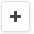
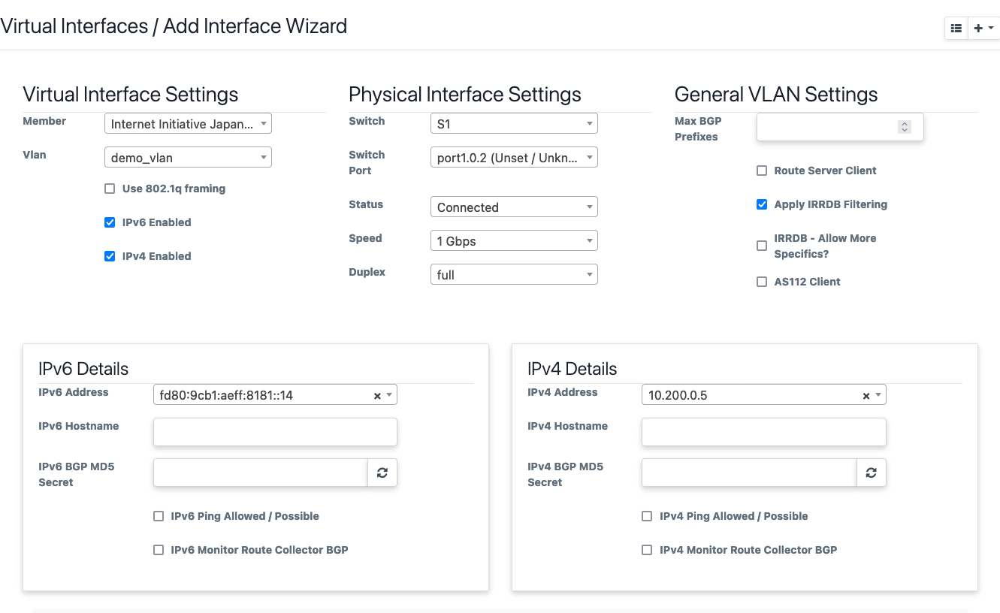

First Time IXP Manager Setup
Congratulations, you have installed HolistIX and its components. This section will go over setting up some basic information inside IXP Manager and HolistIX as a tutorial.
This is not a conclusive guide to IXP Manager, and we will use a lot of examples. However, the goal is to summarize the basic information that HolistIX expects and requires to be set up. For a more in-depth guide, we recommend checking out the IXP Manager documentation or their video tutorial series.
IXP Manager
This will go over some of the basic elements needed in IXP Manager to describe your IXP. We can find most of these found under IXP ADMIN ACTIONS on the left sidebar. When creating a new instance of these, click the  button on the top right of the page to create a new instance.
{kind=link}
The bare minimum needed to be setup within IXP Manager is the following in order:
Infrastructure
Facilities
Racks
Switches
Designate core ports
VLAN(s)
Peering IPs
Member/Customer
Member Connection
Infrastructure
An infrastructure generally consists of a collection of switches that form an IXP Peering LAN. Think of these as an IXP. Where each infrastructure consists of a unique set of switches and these infrastructures are not interconnected. They also typically have their own unique PeeringDB and IX-F entry.
Note
HolistIX currently only supports generating configuration for a single infrastructure at this time.
Facilities
Your point of presences - the data centres where networks can connect to one of IX switches.
Racks
The racks where your switches and patch panels are located.
Switches
You can now add your switches and assign them to a rack and infrastructure. We recommend making use of the SNMP (v2) service that IXP Manager has. It is important to note that IXP Manager will need SNMP access to your switches for this. We also recommend that your switches have a domain name registered in DNS, and to avoid using IP addresses here.
We recommend looking at IXP Manager’s documentation for switches.
Switch IDs:
Once the switch, is added you can view the switch id when you look at the details
of the switch. The ID will be shown as (DB ID: X). This will be the ID that
you need to assign on the OpenFlow Switch.
Designate Core Ports
Currently, there are no ways to declare core links within IXP Manager. However, we can declare which ports on our switches will use for core connectivity.
For this we need to open Switches on the left sidebar, which will
expand the switches submenu, and then open Switch Ports.
On the top right, next to the button, click on the arrow and filter to the
switch that’s ports you want to change. For changing multiple ports, click on
the View / Edit Ports underneath the SNMP Actions section, for individual
ports you can click View / Edit ports under the Database Actions.
Find the ports that you want to designate as core ports and change the
port type to Core.
Note
If no core ports are designated for a switch, you will not be able to connect it to another switch within Miru
VLANs
You will need at least 1 VLAN configured. IXP Manager recommends a separate quarantine VLAN.
With HolistIX, we only allow traffic from per approved members and their specific configured connections. We encode the paths to each configured member on the switches and translate broadcast traffic to unicast, and any other unknown or bad traffic is dropped at the edge.
Peering IPs
Add your peering addresses. This can be either individual addresses or complete ranges (e.g. /24) and a more sensible range for v6 (i.e. not an entire /64)
Member/Customers
One of the features that IXP Manager provides is to auto fill member details via PeeringDB. Reducing admin and accounting errors.

Once the member details have been added, IXP Manager will also request that you enter their registration and billing details. Although not required for testing with HolistIX, this is strongly recommended to help with administration tasks.
Member Connection
To add a connection to a member, you need to open up Interfaces/Ports on the
left sidebar and click the button, and then Add Interface Wizard.
This opens the add interface wizard. From here you can select a member, what peering VLAN they will use, the switch and port they connect to, etc. The IP addresses are pulled from the previously configured IP address range, and limits choices to unused IPs.
Once done, it will take you to the Edit interface page. Here you can add more VLAN interfaces to your physical interface. If the member’s connection is VLAN tagged, tick the 802.1Q box. Configure the MAC addresses for each connection.
While IXP Manager supports multiple MAC addresses per IP address, HolistIX only supports a single MAC address per IP.
Important
You need to configure the MAC address of the members’ connection here. We use this when translating broadcast traffic into unicast.
If not configured correctly, traffic WILL NOT reach a member.
Add your members as they will be/are connected to your IXP. It is important that this reflects what is running in production, we only send traffic to a member on the port with the given IPv4/6 and MAC address that is configured.